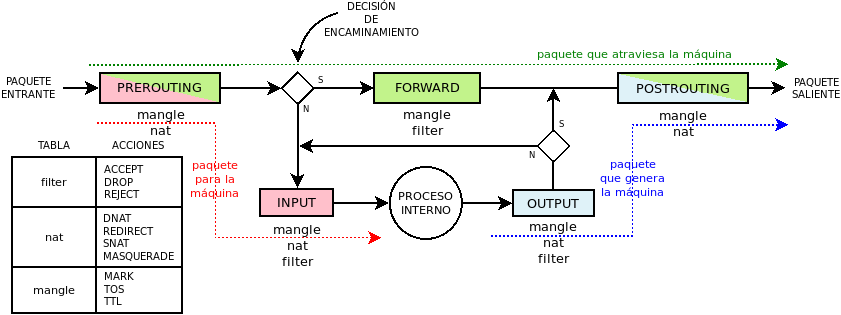

8.7.3.1.1. Conceptos básicos¶
Nota
Centraremos las explicaciones en la principal herramienta: iptables, y añadiremos al final algunas notas para ebtables y arptables.
Partiendo de lo explicado, en general, para netfilter, es fácil particularizar para iptables.
8.7.3.1.1.1. Conceptos¶
En iptables casi todos los conceptos de netfilter (excepto las propias reglas) están predefinidos de antemano.
8.7.3.1.1.1.1. Familias¶
Se usa una u otra aplicación dependiendo de cuál sea el tipo de tráfico (familia) que queramos fiscalizar:
Para tráfico Address Resolution Protocol usaremos arptables.
Para la manipulación en capa 2 de trafico que entra o sale por interfaces bridge debe usarse ebtables.
Para el resto de tráfico, manipulable en capa de red y de transporte, usaremos iptables (IPv4) o ip6tables (IPv6).
8.7.3.1.1.1.2. Tablas¶
Ya está predefinidas sin posibilidad de añadir más:
- filter
Es la tabla que incluye las cadenas dedicadas a contener las reglas de filtrado, (o sea, de tipo filter) habituales.
- nat
Es la tabla que incluye las cadenas dedicadas a contener reglas de tipo nat.
Nota
Recuérdese que este tipo de reglas sólo se aplican al primer paquete de la conexión.
- mangle
Es una tabla que incluye cadenas con reglas de filtrado, dedicadas fundamentalmente a alternar algunos de los campos de cabecera IP (p.e. el TTL o el TOS). También se usan para alterar la marca del paquete, esto es, una marca que no se encuentra en el propio paquete, sino en la representación que el kernel hace del paquete, A efecto prácticos, dónde se encuentre realmente la marca nos importa poco.
- raw
Es la tabla que incluye cadenas con reglas de filtrado utilizada básicamente para marcar paquetes a fin de evitar el seguimiento de la conexión, o bien, para desecharlos antes de cualquier otra decisión. Para el tráfico con que hagamos esto, iptables se comportará como un cortafuegos sin inspección de estado.
- security
Es la tabla que incluye cadenas con reglas de filtrado para crear reglas de seguridad MAC. Véase para más información este artículo.
8.7.3.1.1.1.3. Enganches¶
Dado que son cosa de netfilter, son los ya expuestos. Ahora bien, puesto que, por ahora nos centramos exclusivamente en iptables, podemos simplificar el esquema:
Nota
En este diagrama, los colores no identifican familias de tráfico, sino caminos del paquete.
8.7.3.1.1.1.4. Cadenas¶
Podemos definir las cadenas de usuario que queramos, pero las cadenas base están prestablecidas y lo único que nos será posible definir en ellas es la política predeterminada de aceptación (accept) o rechazo (drop). Por defecto, es accept.
Es fácil identificar las características de una cadena base, puesto que:
Su nombre, aunque en mayúsculas, indica el enganche al que se asocia (p.e. una cadena PREROUTING se engancha a prerouting). Por ello y porque no hay posibilidad de crear más cadenas base de las predefinadas, podemos fundir en uno los conceptos de enganche y de cadena base. De hecho, eso es lo que se ha hecho al pintar el diagrama de flujo simplificado en el que se representan cadenas base y no enganches.
La tabla a la que pertenece nos refiere su prioridad (p.e. las cadenas de la tabla mangle tienen prioridad -150).
También la tabla refiere el tipo de reglas: las que pertenecen a nat son cadenas de tipo de nat y las que pertenecen a todas las demás, de filtrado1.
Las cadenas predefinadas son las siguientes:
PREROUTING |
INPUT |
FORWARD |
OUTPUT |
POSTROUTING |
|
|---|---|---|---|---|---|
raw |
Sí |
Sí |
|||
mangle |
Sí |
Sí |
Sí |
Sí |
Sí |
nat |
Sí |
Sí |
Sí |
Sí |
|
filter |
Sí |
Sí |
Sí |
||
security |
Sí |
Sí |
Sí |
Nota
Como puede verse no hay ninguna cadena INGRESS lo que significa que no hay forma de utilizar ese enganche con iptables. De ahí, que no se haya representado en el diagrama simplificado.
Es preciso puntualizar por qué existen cadenas en nat enganchadas a input y output. Las cadenas de esta tabla sirven, fundamentalmente, para acciones de SNAT y DNAT. Para un paquete entrante, podemos llevar a cabo DNAT en el enganche prerouting, porque el paquete pasa por ahí. En cambio, un paquete creado por un proceso interno, no pasa por ese enganche, y es en output donde de ser necesario, se puede hacer el DNAT2. Por otro lado, para los paquetes salientes se puede hacer SNAT en postrouting, pero si una aplicación local se comunica con otra aplicación local, el paquete nunca pasa por ese enganche y es en input donde puede llevarse a cabo la operación3.
8.7.3.1.1.2. Funcionamiento¶
Si volvemos la vista al diagrama simplificado de flujo, comprobaremos que los paquetes siguen tres caminos:
- Paquetes destinados al cortafuegos
Representados por la línea roja, el primer conjunto de reglas que se comprueba con ellos son las incluidas en la cadena PREROUTING, llamada así porque se aplican tales reglas antes de tomar la decisión de encaminamiento. Pasadas las reglas, se toma la decisión que por nuestra suposición será un proceso interno, lo que implica comprobar las reglas de la cadena INPUT. Si el paquete no es filtrado por alguna de estas últimas reglas, el paquete alcanzará el proceso al que iba destinado y ahí acabará su vida.
- Paquetes en tránsito
Representados por la línea verde, son los paquetes que alcanzan el cortafuegos, pero cuyo destino es otra máquina, por lo que utilizarán otra interfaz de red (excepcionalmente puede que sea la misma) para salir hacia su destino. En su caso la decisión de encaminamiento hace que sigan su curso atravesando la cadena FORWARD. Si logra atravesar esta cadena, comprobará a continuación POSTROUTING, pasada la cual se escoge según la dirección de destino la interfaz de salida y en paquete abandona la máquina.
- Paquetes generados por el cortafuegos
Representados por la línea azul, son los paquetes originados por un proceso interno del cortafuegos. En este caso se comprueban primero las reglas de la cadena OUTPUT. Si el paquete no es filtrado por alguna de sus reglas, alcanzará la cadena POSTROUTING, a partir de la cual se obrará de la misma forma que con el tipo anterior de paquetes.
Además, en lo referente a la conexión, hay siete estados distintos
- NEW
Que es el estado del paquete que origina la conexión.
- ESTABLISHED
Que es el estado del paquete que pertenece a una conexión establecida.
- RELATED
Que es el estado del paquete que origina una conexión que se puede relacionar con otra que ya ha sido establecida. Por ejemplo, imaginemos que intentamos establecer una conexión TCP con un servidor remoto y este nos responde con un paquete ICMP de rechazo. El estado de este segundo paquete sería RELATED, ya que no forma parte de la conexión anterior, pero está relacionado con ella. También en el tráfico FTP el paquete que abre la conexión de datos es es RELATED puesto que tal conexión está relacionada con la conexión de control.
- INVALID
Que es el estado de los paquetes que no se pueden relacionar con ninguna conexión establecida.
- UNTRACKED
Que es el estado de los paquetes de los que se decidió no hacer seguimiento de la conexión (con NOTRACK).
- SNAT
Que es el estado de los paquetes sobre los que se llevó a cabo un cambio en la IP de origen. También tiene este estado los paquetes de respuesta.
- DNAT
Que es el estado de los paquetes sobre los que se llevó a cabo un cambio en la IP de destinoo. También tiene este estado los paquetes de respuesta.
Estos estados no son excluyentes en todos los casos. Por ejemplo, un paquete puede a la vez ser parte de una conexión establecida a la que se aplica enmascaramiento (o sea, SNAT)4.
8.7.3.1.1.3. Sintaxis¶
Dado que la estructura de tablas y cadenas está ya predefinida, las reglas de iptables consiste básicamente en definir las reglas. Por ejemplo, esta es una sentencia válida:
# iptables -A FORWARD -p tcp --dport 25 -j DROP
El primer -A FORWARD, indica que vamos a añadir esta regla al final de la cadena FORWARD. La acción es DROP, o sea, desechar; y la condición es -p tcp --dport 25, o sea, protocolo TCP con puerto de destino el 25. Esto quiere decir que cualquier paquete que cumpla con esto (posiblemente sea tráfico SMTP de salida), está vetado y no atravesará nuestro cortafuegos. ¿Qué pasa con el tráfico web? Como el tráfico web es bastante improbable que tenga como destino el puerto 25, no cumplirá la condición, y no será desechado; al menos por esta regla.
Es muy importante recordar que dentro de una cadena las reglas se comprueban siguiendo un orden, y que las acciones pueden ser terminales (se dejan de comparar el resto de las reglas) como en el caso de ejemplo, o no serlo como por ejemplo:
# iptables -A FORWARD -p tcp --dport 25 -j LOG --log-prefix "Cliente hace petición SMTP"
# iptables -A FORWARD -p tcp --dport 25 -j DROP
En este caso primero se registra el paquete, pero como la regla no es termina, la siguiente desecha el paquete.
En general las sentencia que crean reglas tiene este aspecto:
# iptables [-t TABLA] [opciones] -ACCIÓN CADENA [condiciones] [-j OBJETIVO [opciones_del_objetivo]]
en donde se observa que hay cuatro partes fundamentales:
la elección de la tabla,
Cuál es la acción que se quiere llevar a cabo y sobre qué cadena.
La condición o condiciones que debe cumplir un paquete para que se le apliqye la regla;
El objetivo u acción.
8.7.3.1.1.3.1. Acción¶
Básicamente indican qué se quiere hacer con la regla: si añadirla, borrarla o alternarla y sobre qué cadena se lleva a cabo tal acción:
Acción |
Descripción |
|---|---|
-A <cadena> |
Añade la nueva regla al final de la cadena |
iptables -A INPUT -p tcp –dport 80 -j DROP |
|
-I <cadena> [N] |
Añade la nueva regla a la cadena en la posición que se especifique. Si no se expresa ninguna, se sobreentiente que en la primera. |
iptables -I INPUT -p tcp –dport 80 -j DROP |
|
-D <cadena> [N] |
Borrar una regla de la cadena indicada. Hay dos formas de indicar cuál:
|
iptables -D INPUT -p tcp –dport 80 -j DROP iptables -D INPUT 1 |
|
-R <cadena> [N] |
Reemplaza una regla por otra. Se indica la posición de la regla a reemplazar y a continuación la regla sustituta. |
iptables -R INPUT 1 -p tcp –dport 8080 -j DROP |
|
-F [<cadena>] |
Borrar todas las reglas referentes a una tabla de la cadena. Si no se indica la cadena, borra todas las reglas de todas las cadenas de una tabla. |
iptables -t nat -F PREROUTING |
|
-Z [<cadena>] |
Pone a cero los contadores de paquetes de la cadena especificada. Si no se indica cadena, se aplica a todas las de la tabla. Los contadores muestran el número de paquetes que han cumplido las condiciones de la regla. |
iptables -Z |
|
-N <cadena_de_usaurio> |
Crea una nueva cadena. Para que los paquetes comprueben sus reglas, será necesario saltar a ella desde una de las cadenas predefinidas. Hay un objetivo para ello. |
iptables -N proxy |
|
-X <cadena_de_usuario> |
Borra una cadena creada anteriormente. |
iptables -X proxy |
|
-P [<cadena>] [ACCEPT|DROP] |
Establece la política predeterminada de filtrado:
|
iptables -P INPUT ACCEPT |
|
-L [<cadena>] |
Muestra las reglas añadidas a una cadena. Si no se especifica ninguna, muestra todas las cadenas de la tabla. Son útiles para esta acción, -v, que muestra los contadores de paquetes, -n que muestra direcciones IP y no nombres de máquinas y --line-numbers que muestra la posición de la regla y puede ser usada en las acciones de borrado, inserción y remplazo. |
iptables -t nat –line-numbers -nvL PREROUTING |
8.7.3.1.1.3.2. Objetivo¶
El objetivo es la operación que se lleva a cabo sobre el paquete en caso de que le sea aplicable la regla.
Tabla |
Objetivo |
Descripción |
|
|---|---|---|---|
filter |
ACCEPT |
Se acepta el paquete y no se analizan más reglas de las cadenas de la tabla. |
|
iptables -A INPUT -p icmp -j ACCEPT |
|||
DROP |
Desecha el paquete sin informar al emisor. Por ello, sólo considerará fallida la conexión tras un tiempo de espera. Obviamente, no es revisada ninguna regla posterior. |
||
iptables -A INPUT -p icmp -j DROP |
|||
REJECT |
Rechaza un paquete enviando al emisor el aviso del rechazo mediante un paquete ICMP. Se puede especificar el tipo de ICMP mediante --reject-with y, en el caso, de conexiones TCP se puedfe usar tcp-reset para enviar un paquete RST que cierre elegantemente la conexión. Si no se incluye la opción se envía port-unreachable. |
||
iptables -A FORWARD -p tcp –dport 25 -j REJECT –reject-with tcp-reset |
|||
LOG |
Registra en un archivo el paquete que cumple las condiciones de la regla. De las opciones posibles la más útil es --log-prefix que permite añadir un prefijo a las anotaciones, lo cual puede ser útil para filtrar esas anotaciones. Vea más adelante como realizar anotaciones en el registro. El objetivo no altera la comprobación de las reglas posteriores. |
||
iptables -A FORWARD -p tcp –dport 25 -j LOG –log-prefix=»[netfilter]
iptables -A FORWARD -p tcp –dport 25 -j REJECT –reject-with tcp-reset
|
|||
nat |
SNAT |
Cambia la IP de origen del paquete. Sólo está disponible en las cadenas POSTROUTING e INPUT de la tabla nat. Necesita la opción --to-source para indicar cuál es la IP sustituta. |
|
iptables -t nat -A POSTROUTING -o eth0 -j SNAT –to-source 172.22.0.2 |
|||
MASQUERADE |
Cambia la IP de origen del paquete por la IP de salida del cortafuegos. Útil cuando la IP es dinámica. |
||
iptables -t nat -A POSTROUTING -o eth0 -j MASQUERADE |
|||
DNAT |
Cambia la IP de destino del paquete. Debe hacerse en la cadena PREROUTING o en OUTPUT de la tabla nat. Necesita la opción --to-destination para indicar la IP sustituta. Puede además modificarse el puerto de destino separándolo con dos puntos («:»). |
||
iptables -t nat -A PREROUTING -p udp –dport 53 -j DNAT –to-destination 172.22.0.1 |
|||
REDIRECT |
Cambia la IP de destino a |
||
iptables -t nat -A PREROUTING -p tcp –dport 80 -j REDIRECT –to-port 3128 |
|||
mangle |
MARK |
Sirve para marcar la representanción del paquete en el núcleo de Linux, con el fin de que más adelante el propio iptables u otro proceso reconozca la marca. Debe usarse con la opción --set-mark para fijar la marca (un byte). |
|
iptables -t nat -A PREROUTING -p tcp –dport 22 -j MARK –set-mark 0x2 |
|||
TOS |
Cambia el TOS del paquete. |
||
iptables -t nat -A PREROUTING -p tcp –dport 22 -j TOS –set-tos 0x10 |
|||
TTL |
Cambia el TTL del paquete. |
||
iptables -t nat -A PREROUTING -p tcp –dport 22 -j TTL –set-ttl 64 |
|||
raw |
NOTRACK |
Evitar hacer el seguimiento de la conexión. Puede usarse en las cadenas PREROUTING y OUTPUT. |
|
iptables -t raw -A PREROUTING -p udp –dport 53 -j NOTRACK |
|||
DROP |
Como lo anterior, pero descarta el paquete en vez de dejarlo pasar y no hacerle seguimiento. Si nuestra intención es filtrar un tráfico vaya a la máquina o pretenda atravesarlo, este el mejor momento, ya que sólo requiere una regla en vez de dos, una para cada tabla y, además, se realiza antes de tomar ninguna decisión con lo que es más eficiente. |
||
iptables -t raw -A PREROUTING -p udp –dport 53 -j DROP |
|||
Todas |
nueva_cadena |
Hace que la comprobación de reglas salte a la nueva cadena, que previamente tuvo que ser definida. Si esto ocurre, se comprobarán las reglas incluidas en esta cadena y, si se agotan, se volverá a la cadena en la que se incluyó el salto justamente tras la regla que provocó el salto. |
|
iptables -A INPUT -j indeseables |
|||
RETURN |
Hace que el paquete cese la comprobación de las reglas de la cadena y vuelva a la cadena de orden superior (p.e. un RETURN en indeseables, provoca el regreso a INPUT). Si no hay cadena de orden superior, se aplica la política predefinida de la cadena. |
||
iptables -t nat -A PREROUTING -i eth1 -s 192.168.9.208/28 -p tcp –dport 80 -j RETURN |
|||
CONNMARK |
Define marcas para una conexión. La diferencia entre MARK y CONNMARK es que la primera marca paquetes individuales, mientras que la segunda, una vez usada, marcará todos los paquetes que pertenezcan a la misma conexión. Las marcas de paquete y de conexión son dos campos independientes. Tiene dos grandes utilidades: por un lado, posibilita tener marcados los paquetes de vuelta o incluso paquetes de una conexión relacionada; por otro. Se usa fundamentalmente en la tabla nat, ya que de esta forma se lleva a cabo la definición sólo en el primer paquete. |
||
–set-mark |
Fija la marca de conexión. |
||
iptables -t nat -A PREROUTING -i eth1 -j CONNMARK –set-mark 1 |
|||
–restore-mark |
Copia el valor de la marca de conexión en la marca de paquete. |
||
iptables -t mangle -A FORWARD -j CONNMARK –restore-mark-mark 1 |
|||
–save-mark |
Guarda la marca de paquete en la marca de conexión |
||
iptables -t nat -A POSTROUTING -j CONNMARK –save-mark |
|||
8.7.3.1.1.3.3. Condición¶
Hace aplicable la regla sobre el paquete, de suerte que todos aquellos paquetes que la cumplan realizarán el objetivo expresado en la regla. A cuenta de las condiciones es conveniente saber que:
Pueden expresarse varias condiciones lo que implica que deban cumplirse todas. Por ejemplo, en:
# iptables -t nat -A PREROUTING -i eth1 -s 192.168.9.208/28 -p tcp --dport 80 -j RETURN
hay tres condiciones independientes: -i eth1 que expresa cuál es la interfaz de entrada, -s 192.168.9.208/28, que expresa cuál es la red de origen, y -p tcp --dport 80, que fuerza a que el puerto de destino sea el 80/TCP. Si no se cumplen las condiciones, el paquete no llevará a cabo el objetivo (RETURN).
Las condiciones pueden admitir el uso de opciones. En el ejemplo, la condición es -p tcp (protocolo TCP), pero esta condición admite como opción que se especifique un puerto, de ahí que hayamos podido añadir --dport 80.
Las condiciones pueden negarse anteponiendo el carácter !. Por ejemplo, ! -i eth1 significa cualquier interfaz de entrada, excepto la eth1; o -p tcp ! --dport 80 cualquier puerto TCP excepto el 80.
Podemos distinguir dos tipos de condiciones:
Las condiciones simples que son aquellas que se refieren al origen o destino del paquete (ya sea referido a la interfaz o a su dirección IP) o a su protocolo de capa de red (IP, ICMP) o de transporte (TCP, UDP). En este último caso, podremos inquirir sobre sus puertos de origen o destino.
Las condiciones que requieren un módulo o extensión, las cuales requieren que se especifique qué`extensión es la que se usa a través de la opción -m o --match.
Condiciones simples
Opción |
Descripción |
|
|---|---|---|
-p, –protocol |
Protocolo de capa de transporte del paquete. Los valores posibles son udp, tcp, icmp o all (o sea, todos). |
|
iptables -A FORWARD -p icmp -j REJECT |
||
–sport, –source-port |
Para TCP o UDP, indicar puerto de origen. Para indicar im rango, úsense dos puntos: 80:100. |
|
iptables -A FORWARD -p tcp –sport 80 -j ACCEPT |
||
–dport, –destination-port |
Para TCP o UDP, indica puerto de destino. |
|
iptables -A FORWARD ! -p tcp –dport 80 -j ACCEPT |
||
–tcp-flags |
Para TCP, permite seleccionar paquetes según sus flags: SYN, ACK, FIN, RST, ALL (todas) o NONE (ninguna). Si quieren expresarse varias pueden separarse por comas. Admite dos parámetros el primero cuáles se buscan y el segundo cuáles se esperan encontrar. --syn equivale a --tcp-flags SYN,RST,ACK,FIN SYN. |
|
iptables -A INPUT -p tcp –tcp-flags ALL SYN -j DROP |
||
–icmp-type |
Para ICMP, especifica el tipo de paquete ICMP RFC 792. |
|
iptables -A FORWARD -p icmp ! –icmp-type 8 -j DROP |
||
-s, –source |
IP de origen que puede ser una dirección simple o una red en notación CIDR
(p.e. |
|
iptables -A INPUT -s 192.168.0.0/24 -j DROP |
||
-d, –destination |
IP de destino. |
|
iptables -A FORWARD -d 192.168.0.0/24 -j DROP |
||
-i, –in-interface |
Interfaz de entrada del paquete. Válida sólo en PREROUTING, INPUT y FORWARD. |
|
iptables -A FORWARD -i eth0 -p tcp –tcp-flags SYN -j DROP |
||
-o, –out-interface |
Interfaz de salida del paquete. Válida sólo en POSTROUTING, OUTPUT y FORWARD. |
|
iptables -t nat -A POSTROUTING -o eth0 -j MASQUERADE |
||
Extensiones
Cualquier otra condición no incluida en las simplas que refiere la tabla anterior, son condiciones que requieren de un módulo invocado a través de las opciones -m o --match. No trataremos todas y algunas muy específicas las referiremos en epígrafe aparte.
Extension |
Opción |
Descripción |
|---|---|---|
multiport |
–sports |
Lista de puertos de origen. Admite comas y dos puntos para rangos. |
iptables -A FORWARD –p tcp -m multiport –source-port 22,23,80:100 -j DROP |
||
–dports |
Lista de puertos de destino. Admite comas y dos puntos para rangos. |
|
iptables -A FORWARD –p tcp -m multiport –source-port 22,23,80:100 -j DROP |
||
mark |
–mark |
Marca del paquete. |
iptables -A INPUT -m mark –mark 1 -j DROP |
||
connmark |
–connmark |
Marca de la conexión. |
iptables -t nat -A POSTROUTING -o eth0 -m connmark –mark 0x2 -j MASQUERADE |
||
mac |
–mac-source |
Mac de origen. |
iptables -A INPUT -m mac –mac-source 00:11:22:33:44:55 -j DROP |
||
physdev |
Sirve para manipular de modo muy limitado tráfico conmutado, no encaminado. |
|
-physdev-in |
Interfaz de entrada. |
|
iptables -A INPUT -p tcp –dport 25 -m physdev –physdev-in eth1 -j DROP |
||
-physdev-out |
Interfaz de salida. |
|
iptables -A OUTPUT -p tcp –dport 25 -m physdev –physdev-out eth0 -j DROP |
||
-physdev-is-bridged |
Comprueba si el tráfico es conmutado Solo en FORWARD y POSTROUTING. |
|
iptables -A FORWARD -m physdev –physdev-is-bridged -o br0 -j ACCEPT |
||
string |
Su contenido incluye una cadena. |
|
–algo bm|kmp |
Algoritmo de búsqueda. bm es más rápido pero menos exhaustivo |
|
–string |
Cadena a comprobar. |
|
iptables -A FORWARD -m string –string «facebook» –algo bm -j DROP |
||
Además, trataremos más adelante:
8.7.3.1.1.4. Persistencia¶
Las reglas de iptables no son permanentes, por lo que cualquier apagado de la máquina las limpia por completo. Por ello, cuando se han definido todas las reglas adecuadas, es muy importante buscar un buen método para recuperarñas tras cada arranque. Tenemos varias alternativas:
- Restauración
Las órdenes iptables-save e iptables-restore permiten guardar y recuperar respectivamente las reglas de iptables. Así, una vez que tenemos perfectamente configurado el cortafuegos puede hacerse:
# iptables-save > /etc/iptables.rulesPara recuperar estas reglas tras un reinicio, es preciso ejecutar automáticamente iptables-restore, lo cual podemos lograr incluyéndo est linea en
/etc/tc.local:iptables-restore < /etc/iptables.rules
Nota
ebtables y arptables tienen órdenes equivalentes.
- Script
Consiste en crear un script de la shell en que se introduzcan las órdenes que generan la configuración deseada:
#!/bin/sh iptables -P INPUT DROP iptables -P OUTPUT DROP iptables -P FORWARD DROP # etc...
Para que el script se ejecute al arrancar se puede invocar desde
/etc/rc.local.
Script para interfaces (sólo debian)
Por hacer
Por escribir.
Notas al pie
- 1
No hay reglas de tipo route.
- 2
Porque queremos engañar a la máquina con la que nos comunicamos haciéndole creer que somos otra. Obviamente, la única manera de que esto funcione, es que los paquetes que nuestra comunicamte envía a la máquina suplantada, pasen forzosamente por la nuestra.
- 3
En este caso, para hacer crear a nuestra aplicación que se comunica con una aplicación externa.
- 4
De hecho, en nftables se distingue entre state (new, established, related, invalid o untracked) y status (snat o dnat).